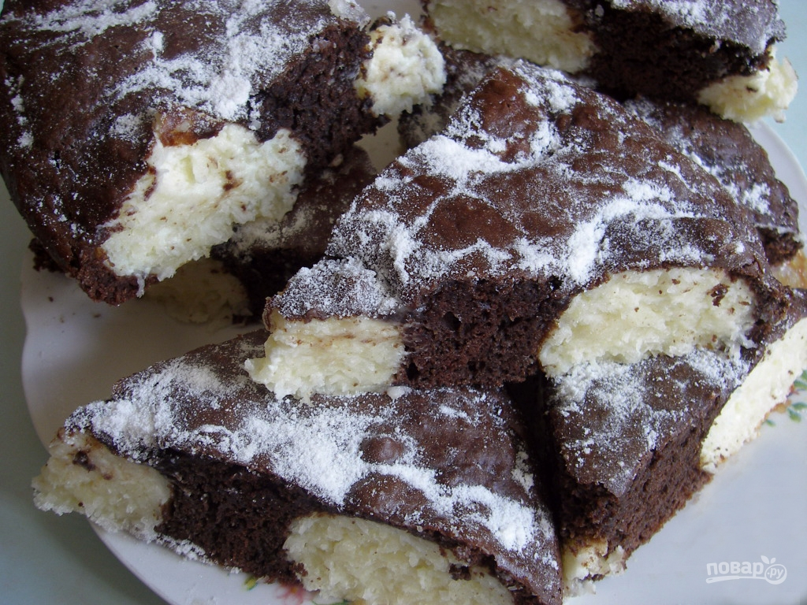

Шоколадный пирог с творожно-кокосовыми шариками

Описание приготовления:
Шарики из творога и кокоса служат своеобразной начинкой.
В разрезе выпечка смотрится очень нарядно и красиво.
Назначение:
На полдник / На праздничный стол / День рождения / Юбилей /
Основной ингредиент: Молочные продукты / Творог / Мука / Яйца
Блюдо: Выпечка / Пироги
География кухни: Европейская
Ингредиенты:
- Яйцо куриное — 6 Штук
- Сахар — 110 Грамм
- Ванильный сахар — 20 Грамм
- Шоколад темный — 50 Грамм
- Мука пшеничная — 2 Ст. ложки
- Крахмал — 3 Ст. ложки
- Какао-порошок — 3 Ст. ложки
- Разрыхлитель теста — 1 Чайная ложка
- Творог — 250 Грамм
- Стружка кокосовая — 50 Грамм
- Сахарная пудра — По вкусу
Количество порций: 12
Этапы приготовления:
Чтобы приготовить кокосово-творожные шарики, в глубокой емкости смешайте творог,
50 грамм сахара, половину крахмала, и кокосовую стружку. Два желтка отделите от белка
и отправьте к остальным ингредиентам. Тщательно все перемешайте.
шаг 2
Разъемную форму для запекания смажьте маслом или застелите пергаментом. Руками скатайте
шарики равного размера из получившейся творожно-кокосовой массы. Выложите их на пергамент
как можно равномернее.
шаг 3
Теперь очередь теста. В миске взбейте четыре куриных желтка, которые следует предварительно
отделить от белков, с сахаром и ванилином. Добавьте растопленный шоколад, остаток крахмала,
просеянную муку, разрыхлитель и какао. Тщательно все перемешайте.
шаг 4
Оставшиеся после отделения от желтков белки взбейте в крепкую пену при помощи миксера.
Чтобы это можно было сделать проще, добавьте к ним щепотку соли. Белки обязательно должны
быть охлажденными перед взбиванием.
шаг 5
Аккуратно порциями введите в тесто взбитые белки. Перемешайте тесто до однородности.
шаг 6
Разогрейте до ста восьмидесяти градусов духовку и выпекайте сорок минут. Готовый пирог остудите и
присыпьте сахарной пудрой.